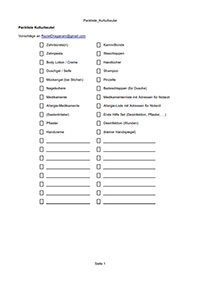

Historisches
Verein für historisches Handwerk und lebendige Geschichte e.V.
Sehr zu empfehlen. Bekannt vom Historischen Handwerkermarkt in Großerlach/Grab und anderen Veranstaltungen.
Packlisten

Packlisten. Unter anderem für das Lagerleben und Kulturbeutel.
Damenmode im 19. Jahrhundert
Übersicht der Damenmode im 19. Jahrhundert.
Unterwäsche

Unterwäsche im 19. Jahrhundert.